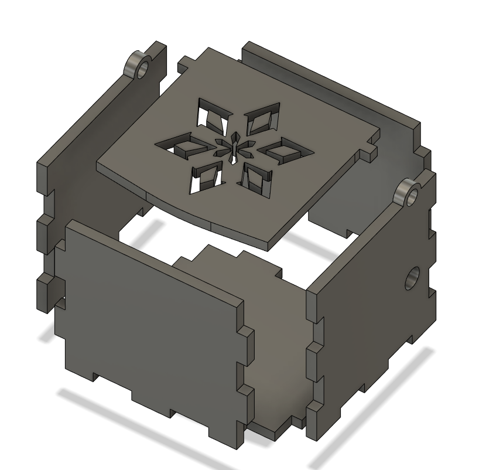

Horse Chess Piece
Fusion 360
I did a 3d design for a horse chess piece using fusion 360
The process for this was using Fusion360 and design a chesspiece with reference to an image i sourced from online. I then proceeded to trace out the image using the Line function. The challenging part of this process was when i had to revolve the traced out line. As it was relative to the origin of the default origin. I had difficulty trying to revolve the tracing as the tracing was not on the default origin, or anywhere close I then figured out how it worked and shifted my tracing onto the default origin, making the base of the tracing as centered as possible.
During the 3D printing, the piece took roughly 20minutes to finish printing out. There were settings that had to be done prior to printing such as changing the quality of the print. The quality of the print would also decide the print timing of the 3D print. The higher the quality of the print, the more detailed the 3d printer would print the object. As well as a longer print time. Support structures had to be used for the parts of the object that were over a certain specified angle. Without the printed support structure, the part where the angle has an overhang exceeds the specified angle will start to drip downwards. As the printer makes the PLA plastic hot enough for it to bend, the gravity will cause the PLA plastic to droop downwards while it is still hot. Thus having the support would be good in order to prevent the overhang from drooping too much.
Music Box
Making a box to contain the music wind up device
Fusion 360
During the design process, I had trouble with trying to get the design of the box as I was learning how to use functions of Fusion360 which i had not learnt before. There were alot of mistakes made and learning from it was what made it satisfying when I completed the design. What i had learnt from this design process being, how to use the combine function and how the sketch function actually worked. When I was experimenting with the sketch function, i found out that if i moved the object after making the sketch, the sketch would follow the previous position of the object. This made designing the box a little tougher due to the fact that the combine function kept combining the surfaces that I did not want to. My solution was to measure the distance i had moved the object, edited the sketch then proceed to move the new object to the position of the object that i want to merge with.
Laser Cutting
Using plywood of 3mm to laser cut a music box

When doing the laser cutting, I had to position the material that I was going to use on the laser cutting bed which was a 3mm thick plywood. When that was done, I then had to position the design that i was going to cut out in the computer program, with Coreal Draw. Afterwards, i had to enable air assist for the machine which was to keep the heat of the material to as low as possible and as well as to suck up the fumes or gases produced during the laser cutting of the material.
When the laser cutting was completed, there was an issue where one of my pieces was placed too close to the edge for the laser cutter to cut, which ended up with that piece not being able to be cut to its intended size. A simple fix was to cut that piece again but place to a little further from the edge.